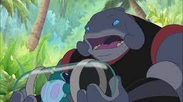
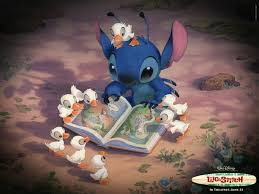
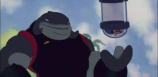

ГАНТУ
Внешность
Ганту виглядит как гибрид слона и акулы. Это доказывает «спинной плавник» на вершине его головы и безносое лицо. Широким ртом он похож на акулу. Ноги у Ганту похожи на слоновьи, что позволяет ему выдерживать всю массу его тела.
Характер
Ганту - типичный солдат и служака. Хотя он не злой по натуре, но слишком прямо воспринимает приказы. Великий советник считает, что у него проблемы с этикой. Так же он обладает садисткой натурой, так как насмехается над закованным Стичем. Так же Ганту не любит, когда над ним прикалываются. Это видно по его отношениям со Стичем или Рубеном.
Нравится
Свобода, приключения, рисовать, петь, танцевать, летающие фонарики, утята, музыка, читать, играть на гитаре, шить, вязать, лазание
Не нравится
Находиться взаперти, издевательства, эгоизм, ограничения, нарушать обещания, ложь, обманы, носить обувь, чрезмерная забота

Описание навыков
- Ганту является экспертам в 12 боевых искусствах.
- Хотя Ганту совсем не злой в первом фильме, но он почему-то сажает Лило в капсулу. Скорее всего, он сделал это случайно, но забыл её выпустить.
- Ганту ненавидит земные колбасные изделия, так как по его словам они "слишком жирные"

Силы и способности
Ганту очень силён, благодаря своему росту. Хотя Стич может его легко поднять, но и он способен оторвать крышу дома.